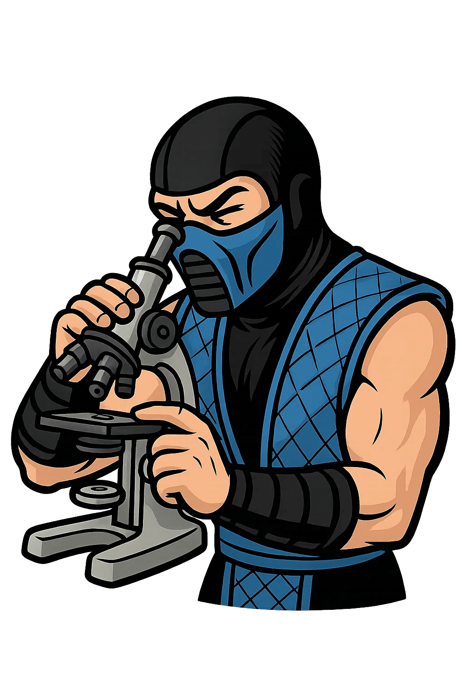

Що це значить: В TypeScript є два способи Наслідування: через типи з допомогою & та інтерфейси з допомогою extends. І нічого нам не заважає їх міксувати.

by Holovko Ivan
const Component = (props: { id: number; name: string }) => {...}Це object type literal (обʼєктний тип-літерал) — тобто тип, записаний у вигляді { id: number; name: string } без окремого імені. Він анонімний, бо не має оголошення через type або interface.
const a = { b: 5 };
interface c {
d: typeof a;
}Тут typeof a — тип. Навіть якщо він виглядає як структура інтерфейсу, це просто анонімний обʼєктний тип, виведений із значення a
type BirdType = { wings: 2 };
interface BirdInterface { wings: 2 }
const bird1: BirdType = { wings: 2 };
const bird2: BirdInterface = { wings: 2 };
const bird3: BirdInterface = bird1;Що це значить: Якщо обʼєкт має усі обов’язкові поля, відповідні очікуваному типу, він вважається сумісним, навіть якщо його тип називається інакше або взагалі не вказаний.
type Owl = { nocturnal: true } & BirdType;
type Robin = { nocturnal: false } & BirdInterface;
interface Chicken extends BirdInterface {
colourful: false;
flies: false;
}
interface Peacock extends BirdType {
colourful: true;
flies: false;
}Що це значить: В TypeScript є два способи Наслідування: через типи з допомогою & та інтерфейси з допомогою extends. І нічого нам не заважає їх міксувати.

interface Animal { name: string }
interface Animal { age: number }
const a: Animal = { name: 'Dog', age: 3 }; // ✅
type Plant = { species: string }
// type Plant = { height: number } // ❌ Errorimplements — це типова перевірка відповідності класу заданому інтерфейсу чи типу. Це не створює тип, а перевіряє, що клас реалізує всі обов’язкові поля/методи з інтерфейсу або типу.
interface B { x: number; y: number };
class Vector implements B {
x = 5;
y = 8;
}type B = { x: number; y: number };
class Vector implements B {
x = 5;
y = 8;
}type C = { x: number } | { y: number };
// ❌ ERROR: A class can only implement an object type
// or intersection of object types with statically known members.
class Fail implements C {
x = 1;
y = 2;
}
type Status = 'active' | 'inactive'; // ✅
interface Status = 'active' | 'inactive'; // ❌ Синтаксична помилкаtype Point = [number, number]; // ✅
interface Point = [number, number]; // ❌ Синтаксична помилкаtype Flags = { [key in Status]: boolean; }; // ✅
interface Flags { [key in Status]: boolean; } // ❌ Syntax error// ✅ працює з type
type IsString<T> = T extends string ? "yes" : "no";
type A = IsString<string>; // "yes"
type B = IsString<number>; // "no"
// ❌ Помилка: Type alias required
interface IsString<T> = T extends string ? "yes" : "no";type GetArrayItemType<T> = T extends (infer U)[] ? U : T;
type X = GetArrayItemType<string[]>; // string
type Y = GetArrayItemType<number>; // numberЦе ключове слово, яке дозволяє "витягти" тип із іншого типу всередині extends.
Це неймовірно потужна штука, наприклад:
type InferredType<T> = T extends (...args: any[]) => infer Result ? Result : never;
type F = () => boolean;
type R = InferredType<F>; // boolean
// ❌ Error
interface InferredType<T> = T extends (...args: any[]) => infer R ? R : never;| Можливість | interface | type | Коментар |
|---|---|---|---|
| Об'єднання | extends | & | І type, і interface підтримують комбінації, але з різним синтаксисом |
| Function signatures | ✅ | ✅ | І interface, і type можуть описувати функції |
| implements у класі | ✅ | ✅ | Type можна implements, якщо це чистий об'єкт — без union |
| Generics | ✅ | ✅ | Generics — працюють і там, і там |
| Union | ❌ | ✅ | type A = B | C — не підтримується через interface |
| Tuple | ❌ | ✅ | type Point = [number, number] — не можна описати через interface |
| Примітиви | ❌ | ✅ | type ID = string | number |
| Mapped types | ❌ | ✅ | type Flags = { [K in Keys]: boolean } |
| Conditional types | ❌ | ✅ | type A<T> = T extends string ? ... |
| Infer | ❌ | ✅ | Працює лише всередині type з умовними типами |
| Declaration merging | ✅ | ❌ | Можна оголошувати кілька разів один й той самий interface, type — ні |
🕰️ Колись (до ~2020) TypeScript-спільнота (і навіть офіційна документація) рекомендувала interface за замовчуванням.
Аргументи:
З часом type став набагато потужнішим: